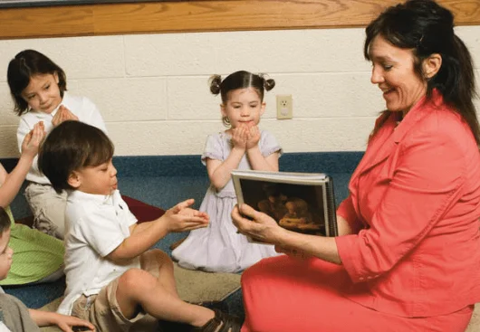
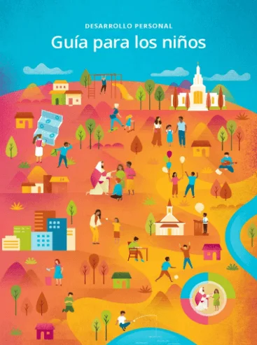

Primary Callings
Primary Presidency
Secretary

Primary Teacher
Nursery Leader
Activity Leaders
Music Leader
Personal Development: Children Guidebook

×

| Age on December 31 of the Previous Year | Class on January 1 |
|---|---|
| 2 | Nursery (children join nursery at 18 months) |
| 3 | Sunbeam |
| 4 | CTR 4 |
| 5 | CTR 5 |
| 6 | CTR 6 |
| 7 | CTR 7 |
| 8 | Valiant 8 |
| 9 | Valiant 9 |
| 10 | Valiant 10 |
| Part of Meeting | Length |
|---|---|
| Opening (prayer, scripture or Article of Faith, and talk—all given by children) | 5 minutes |
| Singing time | 20 minutes |
| Transition to classes | 5 minutes |
| Classes and closing prayer | 20 minutes |